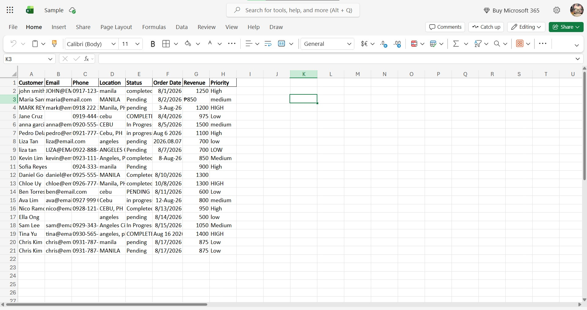
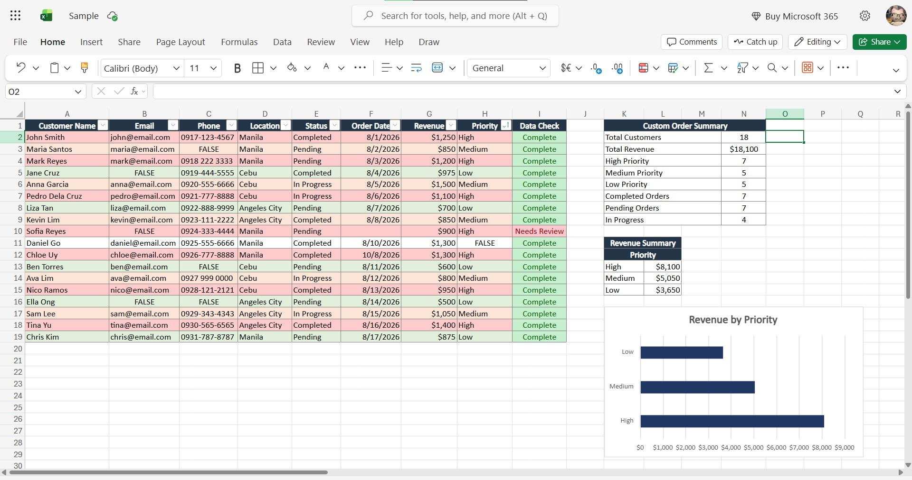

Data & Research
DATA MANAGEMENT
Data Cleaning & Spreadsheet Organization
Cleaned and standardized a fictional customer contact database by removing duplicates, correcting inconsistent formatting, and organizing information into a usable spreadsheet.

Before: Messy and inconsistent customer data with duplicates, inconsistent formatting, and unorganized information.

What I did: Removed duplicates, standardized formatting, organized the columns, added clear data checks for easier use, and created a table summary and graph analysis for easier interpretation.